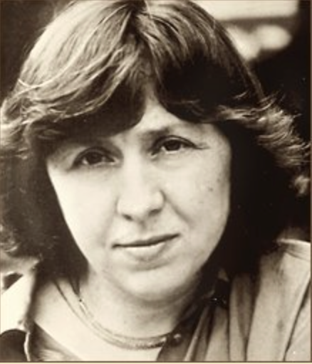
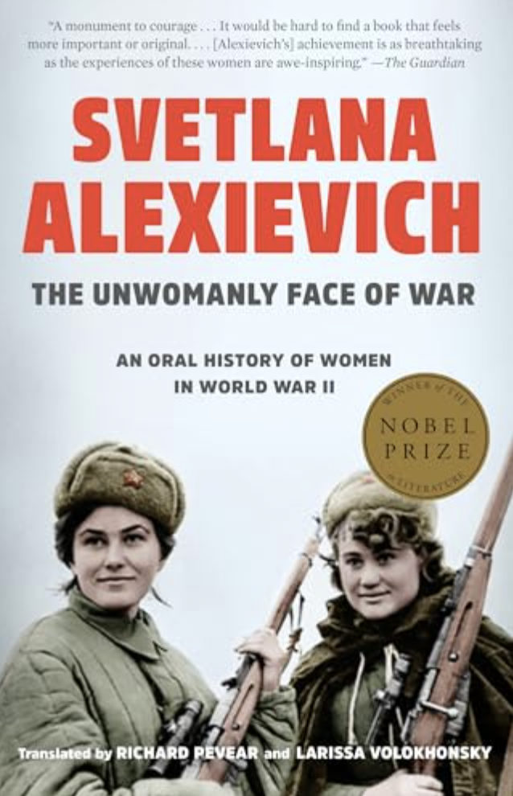

Rusn 388 Russophone Literature in Belarus: Svetlana Alexievich

Fig.1. Svetlana Alexievich
2015 Nobel Prize in Literature: "for her polyphonic writings, a monument to suffering and courage in our time". The first one for a Belarusian writer. Since she got it and the dictator of Belarus got jealous, Alexievich lives in Germany.

Fig.2. Cover of Alexievich's book The Unwomanly Face of War, the 2017 edition.
- A's book was first published during glasnost era (1985) and focuses on lesser known topics, such as women's role in WW2.
- It is a collection of oral histories that questions the coherence of state-sponsored history of victory in WW2.
- Her book examines formerly taboo topics, such as women being human (being subjects rather than objects, having bodies (having periods, for example)), gender violence, harrasment of women, abuse of women who gave birth to children from German soldiers, infanticide, etc.